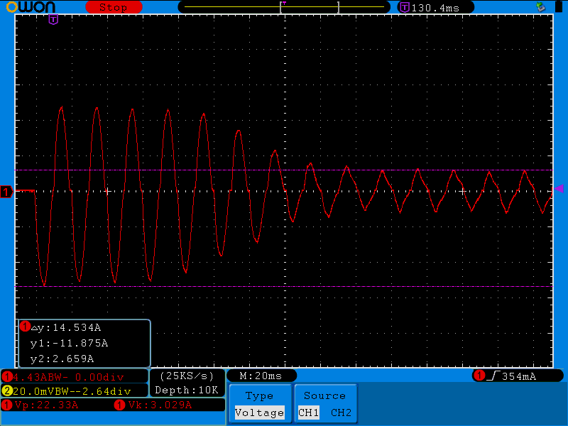
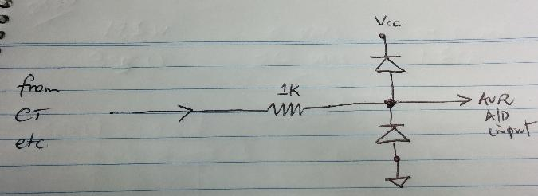

Hi,
I want to monitor a water pump with max. 150W at 230VAC, single phase.
Does anybody have an idea how to measure AC-currents smaller <1A.
I tried with a ACS712 - 5A. But the resolution is very bad, because there is only +/- 185 mV. And this is not much for the 10bit AD-converter (over the whole 5V range) of an Arduino-Input.
Re: measuring AC current <1A
You may know this already, but in case not you'll probably have to size things for much bigger currents than the nameplate suggests. My rainwater tank pump is 4x the power of yours (240V, 600W, 2.8A), but the principles are likely the same. Once mine is in steady-state, it uses only 335W of real power and 260 VARs of reactive power (1.69A with V in the low 250s). I think that's fairly typical of AC motors: as the load comes off the real power reduces but the reactive power increases. I vaguely recall there's some formula for all that, that includes the concept of "slip", at least for synchronous motors.
Anyway, at start-up time they draw much more significant currents, for quite a few cycles. No doubt it varies a lot from motor to motor, and load to load, but I've attached a picture of my pump starting up. You can see at the peak of the first mains cycle, it peaked at 11.875A. It took almost 10 cycles for that to settle down to a more respectable 2.659A (peak). All this from a pump whose namplate says 2.8A (presumably RMS). Stall currents are similarly high should the pump ever jam.
I'm guessing you'll be able to find a CT/burden combo that will turn your pump's current into a respectable swing for your Arduino to measure, but remember to size it for worst case currents, and even then, consider some external protection for the AVR input.

Re: measuring AC current <1A
Thx for Info,
yes, I intended to have a bigger range than needed.
For my 150W-pump, I wanted to take a 5A-Sensor. But I need something to make the measuring range better.
As I explained in the first post, the ACS712 makes only 0,185V/A. This is only ~1V for 5A. As 0A is the middle of 5V (2,5V) I only have a measuring range of 1,5-3,5V for a 5A-AC current.
Here I am losing a lot of resolution. I need something, that can image the 5A-AC current on the whole 5V measuring range of the analog input of an arduino.
What so you suggest as protection for the analog input? e.g. a 4,7V Z-Diode
Re: measuring AC current <1A
You could use an op-amp to amplify the signal to your voltage requirements, or you could use one of the internal reference voltages (2.56V and 1.1V depending on your exact AVR model) to bring the full scale down to your desired dynamic range. Someone else here might be able to suggest a CT/burden combo that will get you the range you need.
You need to protect the AVR input from negative voltages as well. I'd go with a 1K series resistor to limit current when it does get high, and probably two protection diodes, one to Vcc and the other from GND.
Re: measuring AC current <1A
You could also have a multi-turn primary winding with a CT - assuming that the total load that the CT sees is < 100 A, and that may give a better result than your Hall-effect sensor. A 10-turn primary will indicate (nominally) 6.5 A (instead of 0.65 A) and give you 10 A max reading, and you can 'correct' the reading either with the current calibration constant (the CT ratio is now 10 A : 50 mA) or in emonCMS.
If you do add protection diodes, remember that they're in parallel with the internal ones and need to have a lower 'on' voltage if they're to take the major share of the current.
Re: measuring AC current <1A
Can you show me in detail, how to wire this "protection circuit"?
Re: measuring AC current <1A
Something along these lines:

As Robert says, the diodes are replicating what's inside the AVR, and you want yours to conduct earlier than theirs. According to AVR182 their internal diodes are good for 1mA, and they clamp at Vcc+0.5 and GND-0.5 (which I admit is pretty low already). So that should help you size the series resistor and/or protection diodes depending on what you end with in your front end ("from CT etc" in the diagram).
[EDIT] Thinking out loud here, but maybe you could put the series resistor between the diodes and the input pin. By the time one of their internal diodes is conducting 1mA, there'll be 1V across that series resistor so your corresponding diode would well and truly join in by then.